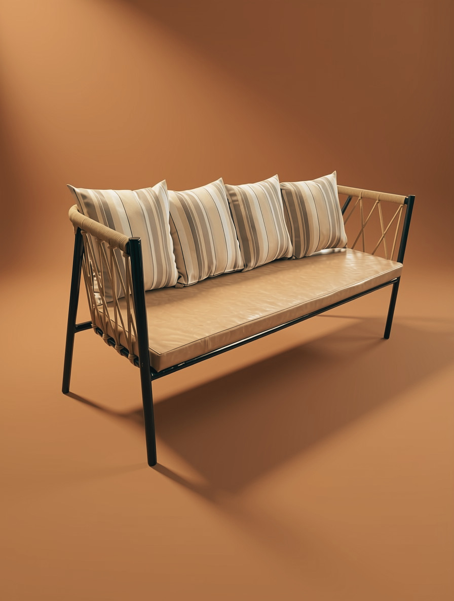

Featured piece · No. 07
The Rope Sofa.
Rope-woven arms on a slim black steel frame, with a soft cushioned seat and striped back cushions. Made in our Nairobi workshop, in the quantity your space needs.
Made to order. Size, colours and fabric can be changed for yours.

Straight off the workshop floor
Furniture
Choose a type of furniture below, or pick the space it is for.